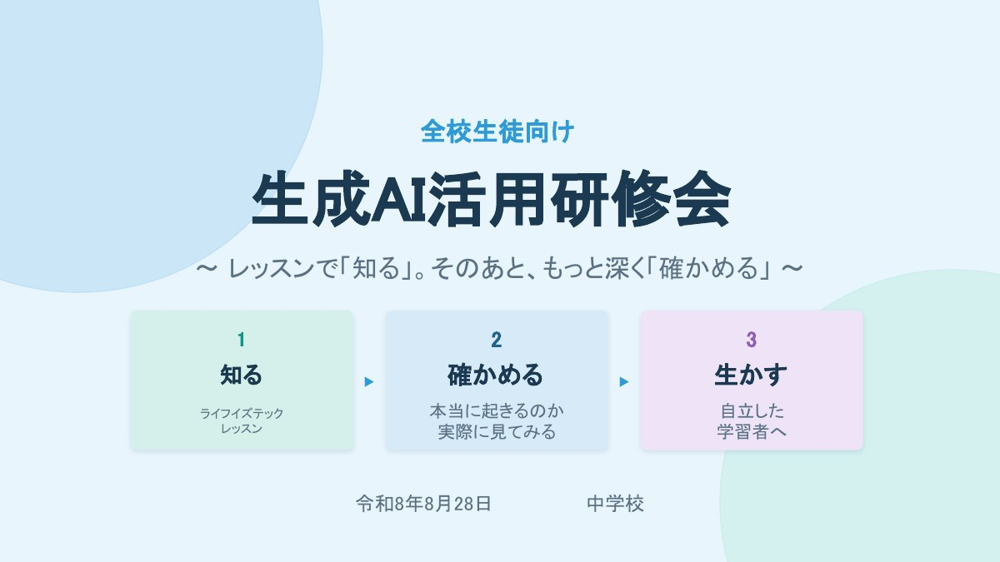
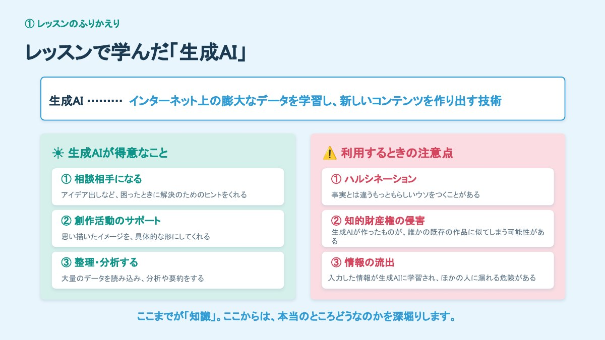
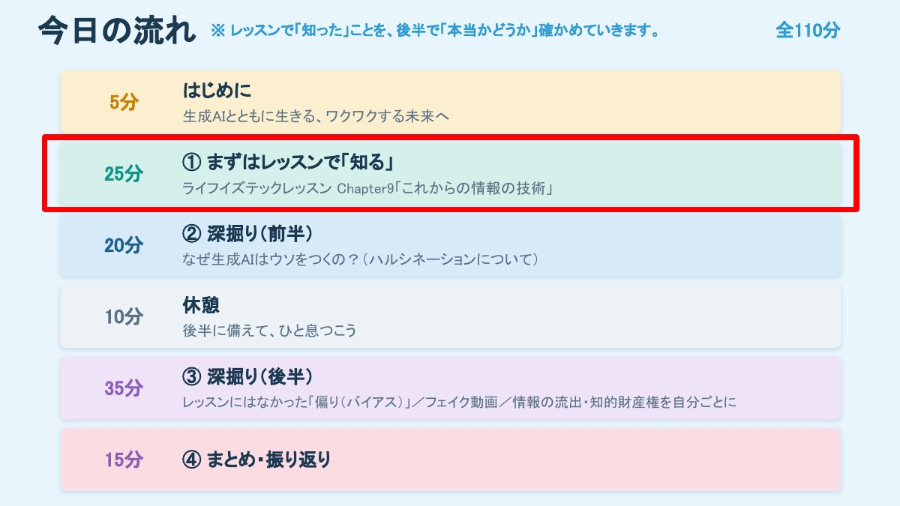
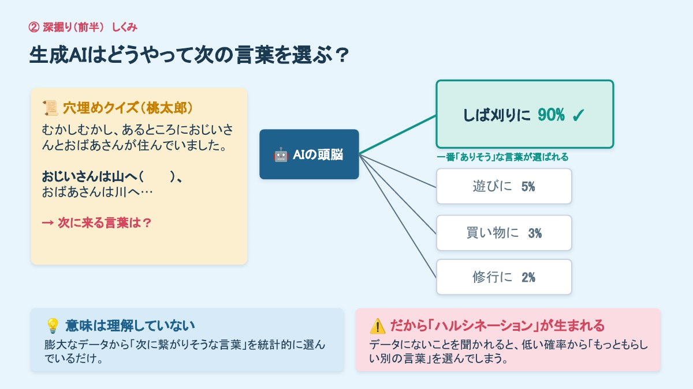
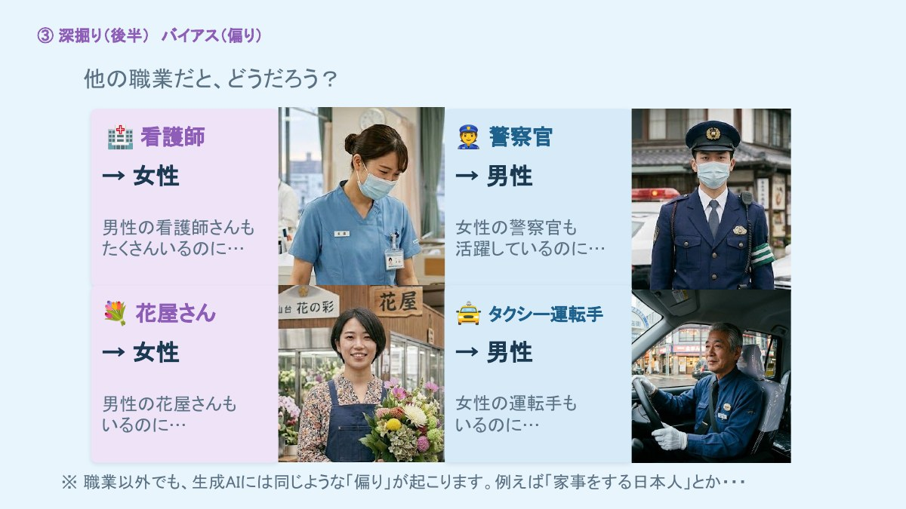
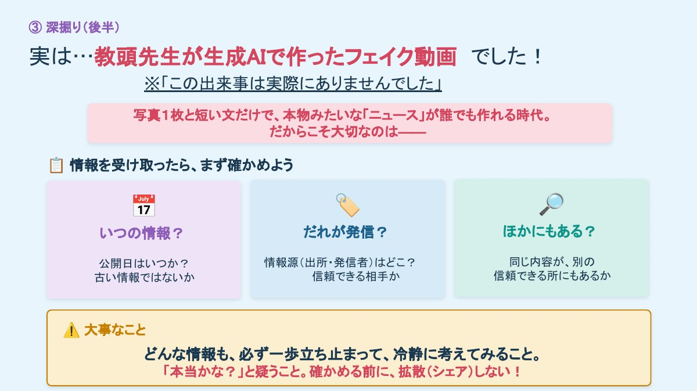
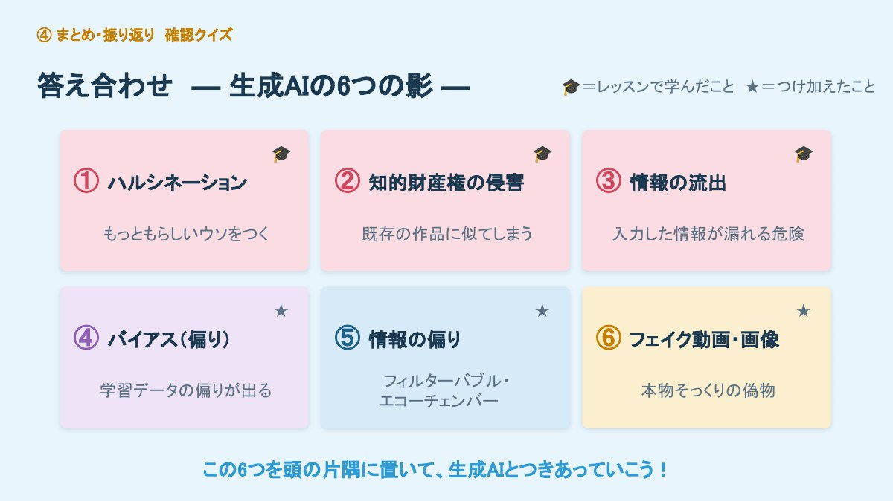
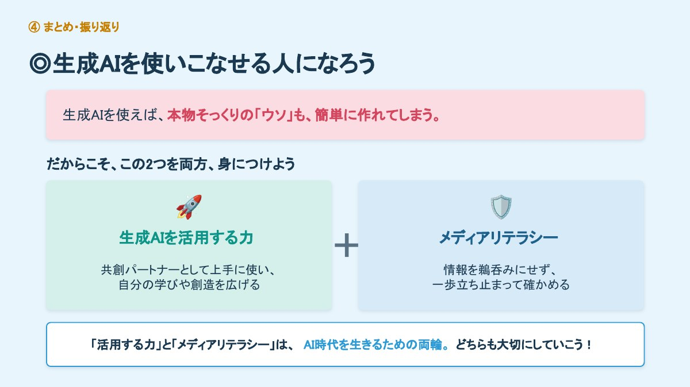

本校の全校生徒を対象に、110分の生成AI活用研修会を実施しました。講師は私が務めました。
研修後の振り返りアンケートには、151人が答えてくれました。この記事では、研修の設計意図と当日の流れ、そして151人分の回答から読み取れたことを記録します。うまくいったことだけでなく、設計上の反省も含めて書きます。同じような研修をこれから設計される方に、少しでも参考になれば幸いです。

「知る」だけでは足りないと考えた
生成AIの研修は、注意点を並べる形になりがちです。ハルシネーション、著作権、情報流出。どれも大事なことです。しかし、注意点を聞いた生徒が本当に行動を変えるかというと、そこには距離があります。
「AIは間違えることがあります」と言われて、「そうなんだ」と思う。それは知識です。けれど、目の前で自分の学校について堂々と間違えるところを見れば、それは体験になります。この差が、行動が変わるかどうかの分かれ目になると考えました。
そこで研修全体を、はっきり二段構えにしました。前半は既存教材で基礎知識を「知る」段階。後半は自校の題材を使って、その知識が本当かどうかを「確かめる」段階です。土台がないまま実演を見せても「へえ、すごい」で終わってしまいますが、「AIはウソをつくことがある」と学んだ直後に本当にウソをつく場面を見れば、知識と体験が結びつきます。

110分の設計

なぜウソをつくのか — 桃太郎の穴埋めで原理を説明する
ハルシネーションを「起きる現象」としてではなく、「起きる理由」として説明したいと考えました。使ったのは桃太郎の穴埋めです。

「おじいさんは山へ（ ）」の空欄に何が入るか。生徒はすぐ「しば刈りに」と答えます。では、なぜそう答えられたのか。意味を理解しているからではなく、その言葉がいちばん来そうだと知っているからです。生成AIも同じことをしている——意味を理解せず、確率的に次に来そうな言葉を並べている。だからデータにないことを聞かれると、低い確率の中から「もっともらしい別の言葉」を選んでしまう。これがハルシネーションの正体です。
説明の直後に、実際に生成AIへ本校の沿革と校歌の歌詞を尋ねる実演を行いました。返ってきたのは、もっともらしい形をした事実と異なる沿革と、まるごと創作された校歌の歌詞でした。作詞者の名前まで、実在しない人物が堂々と挙げられていました。
自分たちの学校のことでさえ平気で間違える。「生成AIが言ったから正しい」は通用しない。この一点を体験として持ち帰ってもらうことが、前半の目標でした。
偏りに気づく — 教材にはなかった論点
バイアスは、使用した教材では扱われていない論点でした。しかし生成AIを日常的に使う世代にとっては、むしろこちらのほうが影響が長く残ると考え、独自に追加しました。
「生成AIに『飛行機のパイロット』の画像を出力させたら、どうなるか」とクイズにして予想させたうえで、実際の出力を見せます。パイロットは男性。看護師は女性。警察官は男性。花屋は女性。タクシー運転手は男性。

ここからフィルターバブルとエコーチェンバーの話につなげました。SNSや動画サービスの「おすすめ」も、自分が好きそうなものばかりを見せてくる。AIの偏りと、自分の情報環境の偏りは地続きです。だから、ときどき自分から「反対の意見」や「知らない世界」を見に行こう、と。
本物か、フェイクか — 自校を舞台にした偽速報
後半の山場として、本校を舞台に「校内にクマが侵入した」という偽の速報動画を、生成AIで自作して見せました。実在しない出来事です。ニュース番組風のテロップと日時表示をつけ、何の予告もなく再生しました。
まず「気づいたこと・感じたこと・自分だったらどうするか」をグループで話し合わせ、そのうえで「本物かフェイクか」を理由つきで答えてもらいました。

写真1枚と短い文章だけで、これだけのものが作れてしまう。だからこそ、情報を受け取ったら「いつの情報か」「だれが発信したか」「ほかの信頼できる情報源にもあるか」を確かめる。確かめる前に拡散しない。この3点を持ち帰ってもらいました。
この教材については、扱いを事前に検討しました。動画の冒頭と終了直後に「この出来事は実際にありませんでした」と明示しています。不安を煽ることが目的ではないためです。
151人の回答から読み取れたこと
研修後、Googleフォームで振り返りアンケートを実施し、151人から回答を得ました。まず全体の数字です。
| 区分 | 人数 | 割合 |
|---|---|---|
| よく使う | 54 | 35.8% |
| ときどき使う | 83 | 55.0% |
| 1〜2回だけ | 9 | 6.0% |
| 使ったことがない | 5 | 3.3% |
この数字を最初に見たとき、正直に言えば少し驚きました。9割を超える生徒が、すでに使っている。学年が上がるほど日常化しており、「よく使う」の割合は1年24%、2年35%、3年44%と明確な差が出ています。
つまり学校は、「使わせるかどうか」を議論する段階をすでに通り過ぎています。議論すべきは「どう使わせたら、より効果的か」です。この認識の切り替えが、いま最も急がれることだと感じました。
1 「知識」ではなく「しくみ」まで届いた
自由記述でもっとも多く現れたのは、「AIは意味を理解しておらず、確率で次の言葉を選んでいる」という趣旨の記述でした。目視で分類したところ約30件、回答者のおよそ2割にあたります。
意味を理解していると思っていたけれど、確率で言葉をつなげていると知って驚いた。
生徒の振り返りより（一部を短く整理しています）
だからハルシネーションが起こるんだと腑に落ちた。
生徒の振り返りより
これは、注意点を列挙しただけでは生まれない反応です。桃太郎の穴埋めで仕組みを説明し、その直後に自校を題材にした実演で確かめさせた。この「原理 → 検証」の並びが、原理理解に接続したと考えています。
そしてこの理解は、6つの影すべての土台になります。なぜ間違えるのか、なぜ偏るのか、なぜ本物そっくりの偽物が作れるのか。すべて「確率で並べている」という一点から説明がつくからです。この設計は、今後の情報教育でも再利用できると思います。
2 驚きの中心は、学年で違った
| 項目 | 人数 | 割合 |
|---|---|---|
| ハルシネーション | 41 | 27.2% |
| フェイク動画・画像 | 39 | 25.8% |
| 情報の流出 | 26 | 17.2% |
| 知的財産権の侵害 | 16 | 10.6% |
| 情報の偏り（フィルターバブル等） | 15 | 9.9% |
| バイアス（偏り） | 14 | 9.3% |
全体の1位はハルシネーションですが、学年別に見ると景色が変わります。1年生・2年生はハルシネーションが1位（各33%）。一方3年生は、フェイク動画・画像（27%）と情報の流出（21%）が上位に来ました。
さらに使用頻度で切ると、傾向がはっきりします。「情報の流出」を選んだ生徒の46%、「フェイク動画・画像」を選んだ生徒の41%が「よく使う」層でした。これに対し「ハルシネーション」を選んだ生徒では27%にとどまります。
読み取れるのは、こういうことだと思います。使用経験が浅い段階では「AIって間違えるのか」という驚きが中心になる。しかし日常的に使う生徒ほど、関心は「自分の情報は大丈夫なのか」「拡散に自分はどう関わるのか」という、より社会的で実践的な問題へ移っている。
これは、全校一律の内容では上級学年に物足りず、下級学年には難しいということでもあります。次回は学年で重点を変える必要があります。
3 「使っている生徒ほど慎重」とは限らない
もうひとつ、見落としたくない数字がありました。「本当かな？と一歩立ち止まれそうか」に否定的だった生徒は7名と少数です。しかしその内訳は、「よく使う」層が4名（同層の7.4%）、「ときどき使う」層が3名（同3.6%）。使用頻度が高い層にやや偏っていました。
母数が小さいので断定はできません。ただ、「慣れ」が「立ち止まらなさ」に転じる可能性は想定しておくべきだと感じました。よく使っている生徒を、そのまま「できている生徒」と見なさない視点が要ります。
4 「人に相談する」が、生徒の言葉になった
研修の最後に、「いちばん大事なのは人と人とのつながり。画面の向こうより、となりにいる人を大切に」という話をしました。これが自由記述に返ってきたのが、8件ほどありました。
AIばかりに頼らず、友達や家族にも相談したい。
生徒の振り返りより
教員から言われたことが、生徒自身の行動指針として言語化されている。生徒指導や教育相談の観点からも、意味のある結果だったと受け止めています。
生徒からの質問に答える
アンケートの質問欄に、答えておくべきものが2件ありました。
Q. 先生もハルシネーションを体験しましたか？
あります。何度も。
研修で見せた校歌の歌詞も、作詞者の名前も、まるごと作り話でした。実を言えば私も最初は「へえ、そうなんだ」と信じかけました。慣れている大人でも引っかかります。だからこそ、確かめる習慣と、なぜ間違えるのかという知識の両方が要るのです。
Q. 勉強のときに、問題や答えを作ってもらうのはアリですか？
アリです。とてもいい使い方だと思います。ただし条件が二つ。
ひとつ、答えが合っているか、教科書や問題集で確かめること。ふたつ、解く前に答えを見ないこと。「問題を作らせて、自分で解く」。この順番なら、考える力は落ちません。
この2件目は、私にとって重い問いかけでした。生徒は、学習方法としての可否を自分で判断できずにいる。そしてこれは、今回の研修が扱わなかった領域です。次の指導課題を、生徒の側から突きつけられた形になりました。各教科での方針提示が要ります。
反省：リスクに寄りすぎた
110分のうち55分を、リスクの話に使ってしまった
自由記述には、こういう記述も一定数ありました。「生成AIは危ないことがわかった」「AIに頼りすぎないようにしたい」「AIに聞かずに自分で考えたい」。回避に傾いた受け止めです。そしてこれは、研修の構成上、避けがたい結果でした。
もともとのねらいは、「未来に可能性を感じ、もっと学びたいと思わせること」でした。ところが実際の時間配分を見ると、110分のうち55分、つまり半分を深掘り（＝リスク）に充てています。プロンプトのコツと実際に使ってみるワークは「予備（時間があれば）」の扱いで、当日は十分に時間を取れませんでした。
光と影の両方を扱ったつもりでしたが、時間の重みが影に寄っていた。生徒の印象がそちらに引っ張られるのは当然です。ねらいを裏切ったのは内容ではなく、時間配分でした。
これから同じような研修を設計される方には、この点をお伝えしたいと思います。扱う項目のリストではなく、各項目に何分使うかを見てください。生徒が持ち帰る印象は、そこで決まります。

第2弾へ：「気をつけて使う」から「よりよく使う」へ
そこで第2弾は、ハンズオン形式の「プロンプト＆成果物共有会」として構想しています。第1弾が「気をつけて使う」の獲得だったのに対し、第2弾は「よりよく使う」の獲得を目指します。
| 段階 | 内容 | 時間 |
|---|---|---|
| 導入 | 前回のアンケート結果を返す。「6つの影」の確認 | 10分 |
| 比較体験 | 同じ課題を「雑な聞き方」と「公式に沿った聞き方」で試し、出力の差を体感する | 20分 |
| 個人ワーク | 自分の探究テーマ・困りごとを持ち込み、対話しながら成果物を作る | 30分 |
| 吟味 | 出力を「使える／使えない」に仕分け、根拠を書き添える | 15分 |
| 共有 | 学級内から全校へ。優れたプロンプトと成果物を掲示・配信する | 20分 |
| まとめ | 学習での使い方の線引き（問題を作らせて自分で解く 等） | 15分 |
設計上、外せないと考えている4点
- 成果物は各自の実課題から取る。架空の課題では吟味が働きません。総合的な学習の時間のテーマ、自主学習、部活動の練習計画など、自分の困りごとを持ち込ませます。
- 「使えない出力」も共有対象にする。失敗例の共有は、第1弾で学んだハルシネーションやバイアスの実地確認として機能します。
- 学年で難度を変える。1・2年は公式に沿った入力と検証が中心。3年は複数回の対話による絞り込みや、進路・受験学習での線引きまで扱います。
- 評価の軸を先に示す。出力の質ではなく「問いの立て方」と「吟味の根拠」を評価対象とすることを、生徒に事前に明示します。
なお本校では、技術科のPBL単元で、生徒が身のまわりの「不便」を調査し課題文を立てる過程に、すでに生成AIとの対話を組み込んでいます。第2弾で「自分の探究テーマを持ち込む」という設計は、この既存の実践と接続させることを想定したものです。
そして教員側の準備です。第2弾は、机間指導の質が成否を分けます。教員自身が「聞き方で出力が変わる」経験を持っていなければ、生徒に助言できません。事前に職員研修で同じワークを短時間でも体験しておきたいと考えています。
運用面の改善点
- フォームの入力形式。出席番号欄で表記ゆれが生じ、集計に余計な手間がかかりました。次回はプルダウンか入力制限をかけます。
- 回答時間の確保。出席者に対する回答率は約80%。研修終了直前に時間が足りなかった学級があったと思われます。次回は最後の10分を回答時間として明示的に確保します。
- 事前・事後の比較。今回は事後のみの調査だったため、変容を数値で示せていません。第2弾では同一項目で事前調査を行い、変化を捉えます。
おわりに：両輪であること

生成AIを使えば、本物そっくりのウソも簡単に作れてしまいます。だからこそ、活用する力とメディアリテラシーの両方が要る。研修の最後は、この2つは両輪だという話で締めくくりました。
ただ、今回の110分は、その両輪のうち片方だけを強く回してしまった回でした。9割を超える生徒がすでに使っているという実態を前にして、学校が伝えるべきことは「気をつけなさい」だけではないはずです。
生徒からはすでに「勉強にどう使えばよいか」という問いが出ています。学校としての答えを、次の機会に用意したいと思います。